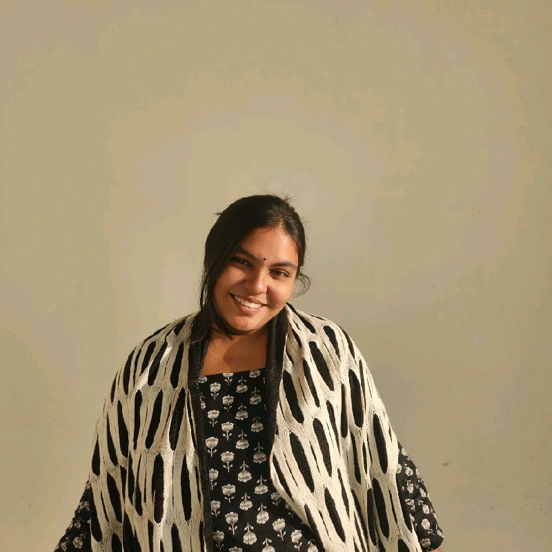
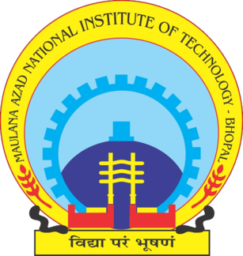
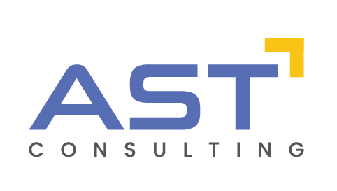

HELLO 👋 I'M
I enjoy identifying user problems, validating ideas through research, and transforming insights into products that create measurable impact. My experience spans product strategy, cross-functional leadership, AI, research, and stakeholder collaboration. Currently building PlaceMint, an AI-powered placement platform designed to improve career readiness for 15,000+ students.

Researchers Led
Projected Users
Research Internships
Students Impacted
I'm a Computer Science undergraduate passionate about Product Management, Artificial Intelligence, and building products that solve meaningful problems.
Over the past few years, I've collaborated with international researchers, worked with academic institutions, led cross-functional teams, and developed AI-powered solutions across education, healthcare, and intelligent systems.
I enjoy working at the intersection of User Research, Product Strategy, Feature Prioritization, Stakeholder Management and Execution.
Building products by combining user research, strategic thinking, AI, and continuous iteration.
PlaceMint is an AI-powered platform designed to simplify placement preparation by bringing resume reviews, coding practice, mock interviews, personalized learning, and progress tracking into a single ecosystem.
Students preparing for placements often switch between multiple platforms for resumes, aptitude practice, coding challenges, interview preparation, and progress tracking, leading to fragmented learning experiences.
Identified recurring pain points through discussions with students and analyzed existing placement preparation workflows to understand feature gaps and opportunities.
Defined the MVP by prioritizing high-impact features including AI Resume Analysis, Coding Practice, AI Mock Interviews, Learning Paths, Performance Analytics, and Career Tracking.
Designed with an expected adoption of 15,000+ students across universities while improving accessibility and reducing the need to switch between multiple preparation platforms.
Leading discussions around institutional partnerships and exploring government funding opportunities to scale PlaceMint across higher education institutions in India.
Every feature is designed around solving real student problems identified through research and feedback.
Prioritized features based on user value, feasibility, and long-term scalability.
Focused on building partnerships with institutions while exploring government-backed funding initiatives for nationwide adoption.
Experiences that strengthened my product thinking, leadership, execution, and collaboration.


Driving initiatives, building communities, and leading student teams.
Led promotional campaigns and coordinated outreach for startup events and entrepreneurship initiatives, engaging 2,000+ students.
Managed community engagement for 500+ students while collaborating with cross-functional teams to execute technical events.
Mentored student teams, guided project planning, and supported execution of technical initiatives.
How I approach product development—from identifying problems to building scalable solutions.
I begin by understanding user pain points through research, feedback, and observation before defining product requirements.
I prioritize features based on user impact, technical feasibility, business value, and long-term scalability.
I believe every product decision should be backed by research, analytics, and measurable outcomes.
Experienced in working with researchers, faculty, developers, and student communities to transform ideas into reality.
I'm always open to discussing Product Management, AI, internships, research, or exciting opportunities.